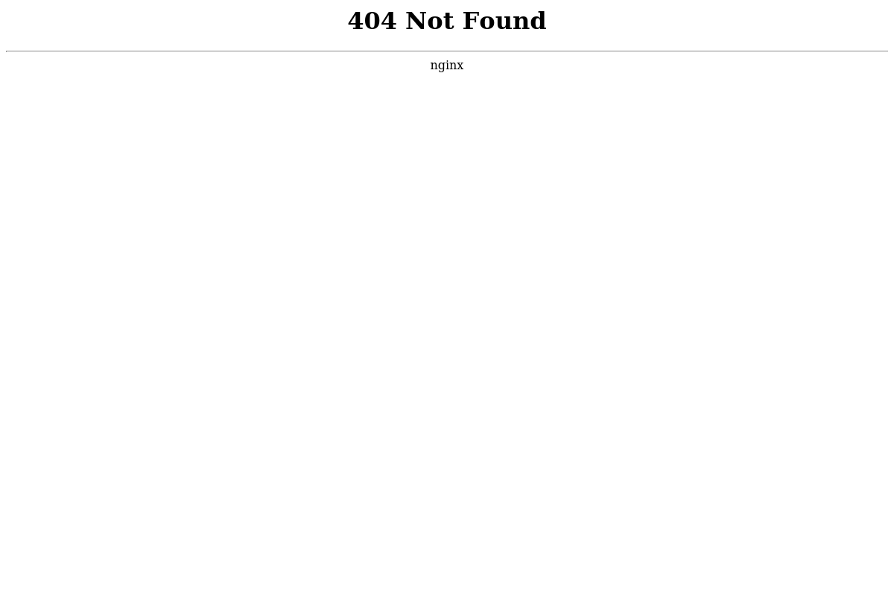

Screeshot
Port 80 Port 443
 
Dig Info
; <<>> DiG 9.11.4-2-Debian <<>> notifications.seek.com.au
;; global options: +cmd
;; Got answer:
;; ->>HEADER<<- opcode: QUERY, status: NOERROR, id: 46525
;; flags: qr rd ra; QUERY: 1, ANSWER: 4, AUTHORITY: 0, ADDITIONAL: 1
;; OPT PSEUDOSECTION:
; EDNS: version: 0, flags:; MBZ: 0x0005, udp: 512
;; QUESTION SECTION:
;notifications.seek.com.au. IN A
;; ANSWER SECTION:
notifications.seek.com.au. 5 IN A 52.84.248.40
notifications.seek.com.au. 5 IN A 52.84.248.59
notifications.seek.com.au. 5 IN A 52.84.248.31
notifications.seek.com.au. 5 IN A 52.84.248.112
;; Query time: 300 msec
;; SERVER: 192.168.58.2#53(192.168.58.2)
;; WHEN: Tue May 21 13:23:45 EDT 2019
;; MSG SIZE rcvd: 118
Host Info
notifications.seek.com.au has address 52.84.248.112
notifications.seek.com.au has address 52.84.248.31
notifications.seek.com.au has address 52.84.248.59
notifications.seek.com.au has address 52.84.248.40
Response Header
HTTP/1.1 404 Not Found
Content-Type: text/html
Content-Length: 162
Connection: keep-alive
Server: nginx
Date: Tue, 21 May 2019 17:23:47 GMT
X-Cache: Error from cloudfront
Via: 1.1 23bee510a951c47c4c1082b3e720b091.cloudfront.net (CloudFront)
X-Amz-Cf-Id: MFsP9V0SScIL1w8hMGHKbemxjOfrmAgkcoSIl6yPSoNAVrZNv9TUkw==
Nmap Results
nmap -sV -T3 -Pn -p3868,3366,8443,8080,9443,9091,3000,8000,5900,8081,6000,10000,8181,3306,5000,4000,8888,5432,15672,9999,161,4044,7077,4040,9000,8089,443,7447,7080,8880,8983,5673,7443
Starting Nmap 7.70 ( https://nmap.org ) at 2019-05-21 13:23 EDT
Nmap scan report for notifications.seek.com.au (52.84.248.59)
Host is up (0.12s latency).
Other addresses for notifications.seek.com.au (not scanned): 52.84.248.40 52.84.248.112 52.84.248.31
rDNS record for 52.84.248.59: server-52-84-248-59.tpe52.r.cloudfront.net
Not shown: 32 filtered ports
PORT STATE SERVICE VERSION
443/tcp open ssl/http Amazon CloudFront httpd
Service detection performed. Please report any incorrect results at https://nmap.org/submit/ .
Nmap done: 1 IP address (1 host up) scanned in 19.55 seconds